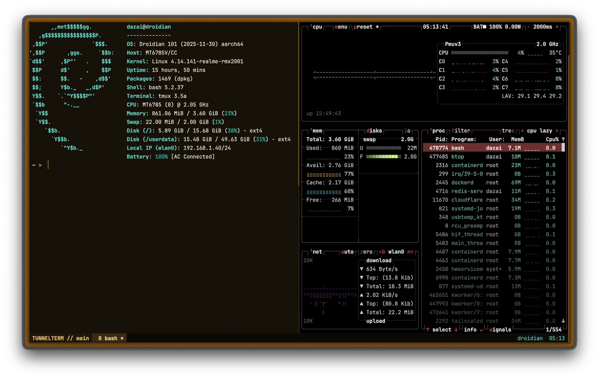
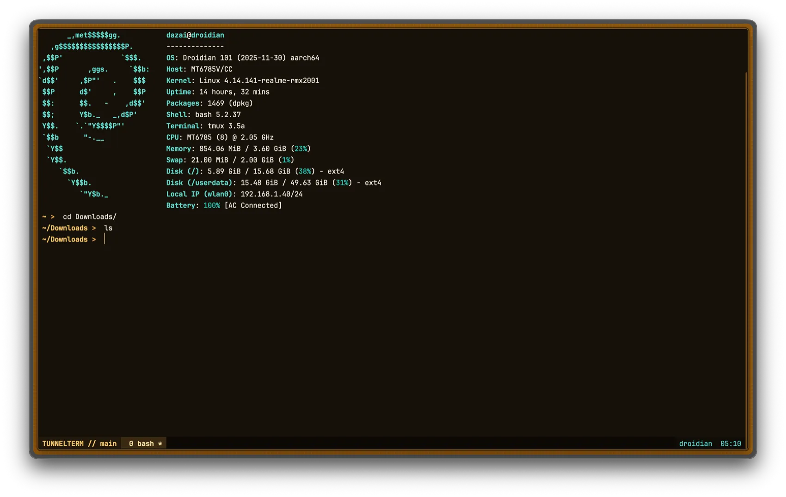

TunnelTerm
A containerized web terminal for a Linux host — ttyd behind an authenticated Nginx gateway, reaching the host through a loopback-restricted SSH key, with an optional Cloudflare Tunnel so the gateway can be published without opening a router port.
- Role
- Full-stack Developer
- Ownership
- Independent build
- Scope
- Gateway, auth service, containers, CLI launchers
- Delivery
- Open source, MIT


The Challenge
Reaching a home or self-hosted Linux box from a browser usually means either exposing SSH directly to the internet, or accepting a terminal-in-a-tab tool that hands out real shell access without much thought for the auth layer in front of it. Neither is something to leave running unattended.
TunnelTerm keeps the shell itself off the public internet entirely. ttyd and the SSH connection it wraps stay bound to loopback; the only thing reachable from outside is an Nginx gateway that checks a signed session on every request — page loads and the WebSocket upgrade alike — before it will proxy anything through.
My Role
I built the whole stack: the Go authentication service, the Nginx gateway configuration, the container images and their entrypoints, the generated CLI launchers for four platforms, and the setup script that turns a bare host into a running deployment.
What I Delivered
- Authenticated gateway: Nginx's
auth_requestmodule gates every page and WebSocket upgrade behind a single internal call to the auth service — no route bypasses it. - Standalone Go auth service: bcrypt password check, constant-time username comparison, an HMAC-signed session cookie, and no session store to lose or leak.
- Persistent host sessions: ttyd runs
tmux new -Aover SSH, so a session survives a closed tab and the next login drops back into the same shell. - Generated CLI launchers: a setup script produces POSIX and PowerShell scripts that install
cloudflaredon demand (including Termux's native package on Android) and tunnel SSH through Cloudflare, so CLI access needs no client-side pre-installation beyond an SSH client. - Container hardening: read-only root filesystems,
cap_drop: ALL,no-new-privileges, and non-root users across every service, with none of them mounting the Docker socket, the host root filesystem, or host process namespaces. - Shell theming: matching Starship, tmux, and
dircolorsconfigs installable on the host, plus a shared xterm palette so the browser terminal and a locally attached ttyd service look identical.
Key Decisions
One auth check in front of everything. The gateway's only protected
location block calls auth_request /_auth, which forwards the request
cookie to the Go service's /verify endpoint. A 401 redirects to
/login; anything else proxies straight through to ttyd, WebSocket upgrade
headers included. There is exactly one place authentication can fail open, and it fails
closed.
A restricted key, not a general-purpose one. The terminal container
reaches the host as an ordinary SSH client with BatchMode,
IdentitiesOnly, password authentication disabled, and a pinned
known_hosts file. The setup script installs the container's key on the
host with OpenSSH's restrict,from="127.0.0.1,::1" — it only
authenticates from loopback, and forwarding, agent access, and X11 are all off, so the
key is useless to anything except the container it was generated for.
Signed cookies, no session table. The session cookie carries the username and an expiry, base64-encoded and HMAC-SHA256 signed with a key that never leaves the auth container. Verifying a session is one signature check, with nothing to look up and nothing to clean up when it expires.
Rate limiting sized for a single-tenant service. Failed logins are tracked per client IP in a bounded in-memory map (capped at 4096 entries, a 15-minute window, five attempts before a lockout), which is enough for a service with one legitimate user and avoids the operational weight of an external store.
Hardening
- ttyd binds to loopback only (
-i lo) and the terminal, gateway, and auth containers all listen on127.0.0.1; nothing is reachable except through the gateway. - Bcrypt credential hashing, an HMAC-signed session cookie, and a 250 ms delay plus per-IP throttling on failed logins.
- A strict
Content-Security-Policy,no-storecaching,X-Frame-Options: DENY, and same-origin checks on every state-changing request. - Every container runs read-only, non-root, with all Linux capabilities dropped and
no-new-privilegesset. - The SSH key handed to the terminal container is installed with
restrict,from="127.0.0.1,::1", so it only works from loopback and can't be used for forwarding or agent access.
Outcome
TunnelTerm is open source under MIT and deploys with a single setup script and
docker compose up -d --build. It's the terminal I actually use to reach my
own boxes — from a browser through the authenticated gateway, or from a CLI
launcher that tunnels SSH through Cloudflare without ever opening a port.